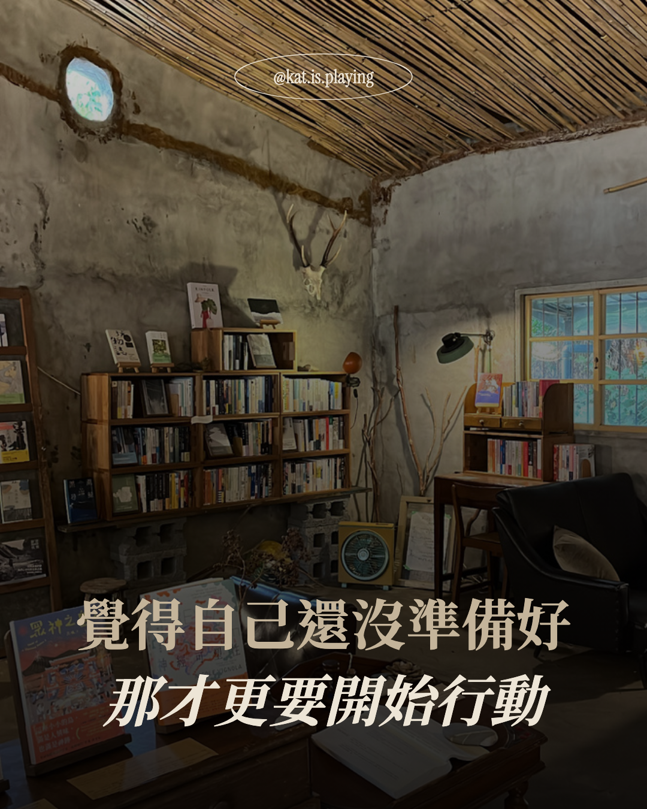
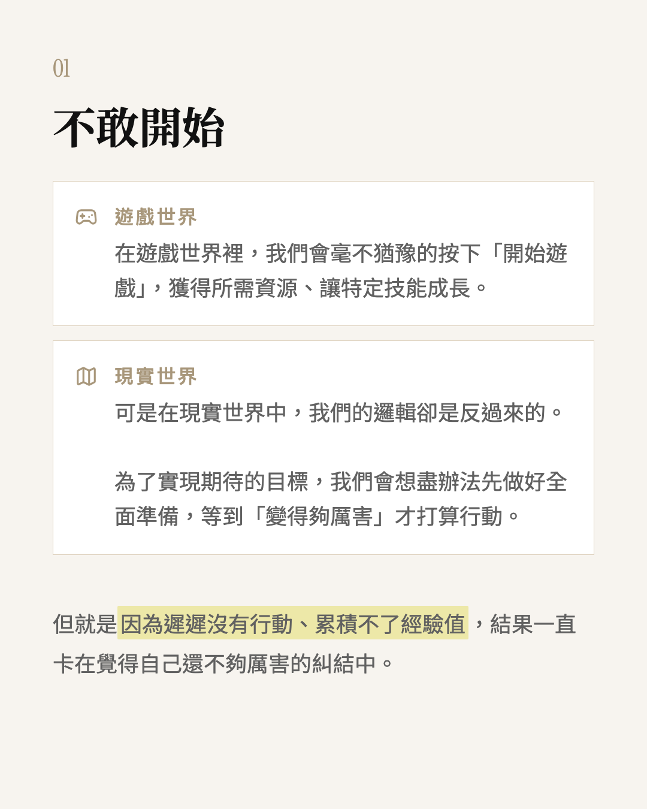

@Zealogics
副業請的第一位員工不是人
我怎麼調教 Claude 讓他好好聽話

下班後是一位職涯諮詢師
透過引導和回饋，讓對方看見自己的優勢、盲點、行為模式。
根據個人目標和可用的資源（包括金錢、時間、能量），製定具體的行動計劃。
為什麼要請 Claude 當員工
隨著服務人數越來越多，希望提升行政和創作流程（寫文章、做簡報）的效率。
也想再提升服務能見度，例如：建立官網。所以聘請能滿足我大部分需求的 Claude 來當我的員工。

但是看得懂工程迷因梗圖


設定 Git 做版本紀錄
只需要用自然語言跟 Claude 溝通就好，例如：
- 幫我推上去 GitHub，建立 Pages
- 我要看之前的版本紀錄
- 幫我把＿＿版本抓下來


撰寫 Claude.md
確保遵循工作守則
每次打開 Claude Code 開始新對話，都會自動先讀 Claude.md，可以請 Claude Code 自己撰寫並持續更新。
內容要精簡、撰寫最核心的守則就好，不然很消耗 Token：
- 你是誰、身份是什麼
- Always / Never 清單
- 目前執行的專案概覽

用 /plan 事先做好計劃
Claude Code 有內建 Plan mode，可以輸入 /plan 或 Shift+Tab 切換。
好處是在執行比較複雜的任務前，能先看到 Claude 的思路跟規劃，不用等到執行完才發現跟期待有太大偏差。
用 /brainstorming 釐清需求
如果是需求比較模糊的專案（例如：想做一套簡報模板），可以安裝 /brainstorming skills 一步步確認規格，撰寫產品文件。

用 /caveman 節省 75% token 用量
安裝 /caveman skills，讓 Claude 只講重點別廢話，實測覺得英文的節省效果比較好，所以我現在都是跟 Claude 講英文。

色彩系統
可以提供主色後，自動產出完整色盤、搭配的功能色。

Icon
挑選開源 Icon 資料庫，自動根據內容選擇合適 Icon。
職涯諮詢官網
讓有興趣的人更了解我的服務價值、特色、流程。

Instagram 貼文模板
根據我貼上的文章內容，自動套用合適文字樣式（螢光筆、引言、卡片）。



日記分析報告
抓取 Heptabase 日記卡片，分析每月總覽、成就里程碑、下個月份或季度注意事項。